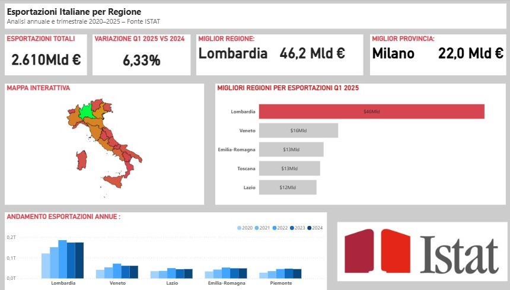

Trends and Regional Comparison
In this project, I created a page to analyze the trends of Italian exports, focusing on individual regions, in order to examine changes and rank the top exporting regions.
The analysis shows that Italian exports are growing. The five main exporting regions are, in order: Lombardy, Veneto, Emilia-Romagna, Tuscany, and Lazio. Lombardy clearly holds the top position, driven especially by its capital, Milan. The interactive map highlights that, outside of these five regions, export levels are significantly lower. Finally, looking at the vertical bar chart, it is evident that all five regions experienced a peak in exports in 2022, a trend that can be explained by the end of COVID-19-related restrictions.
